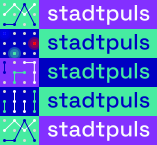
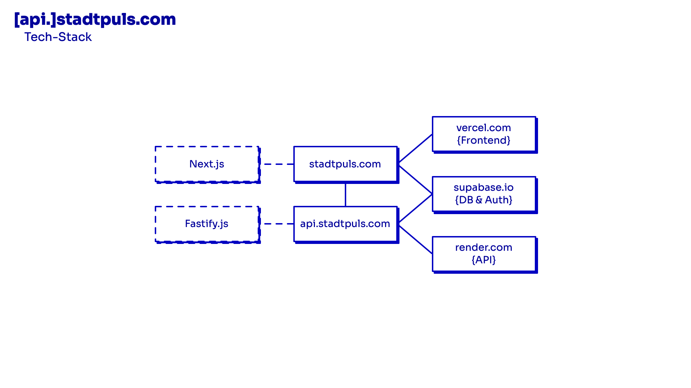
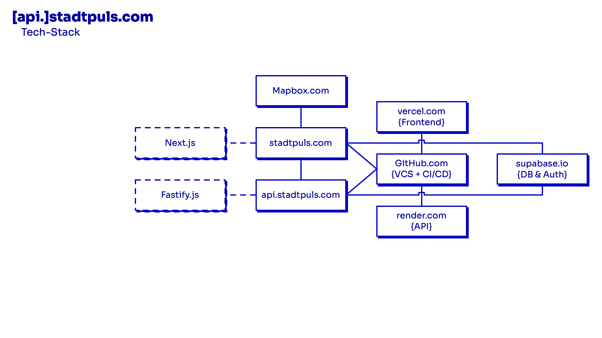
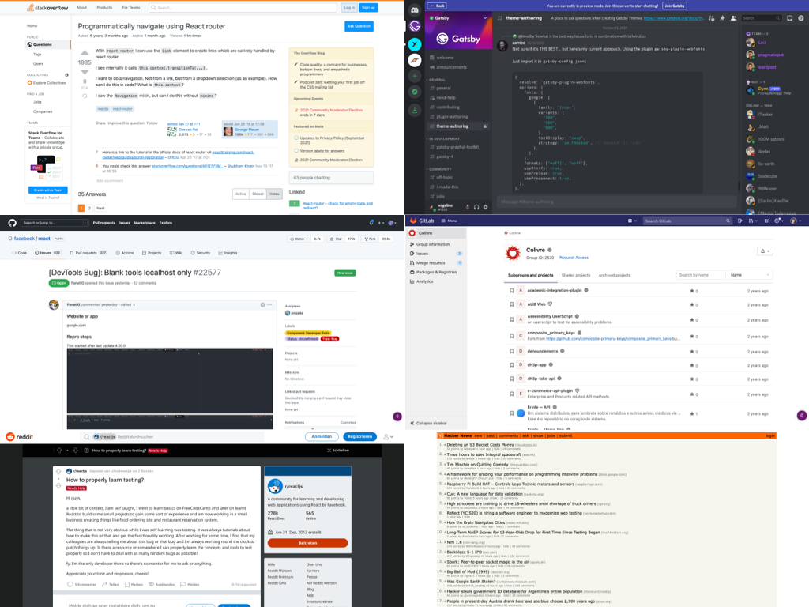
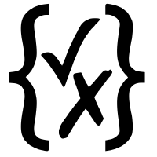
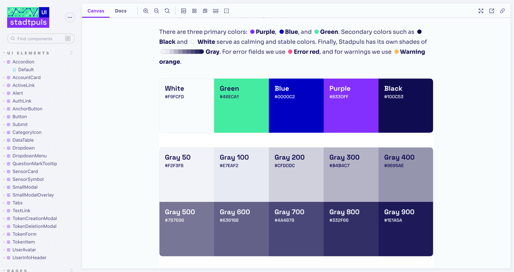
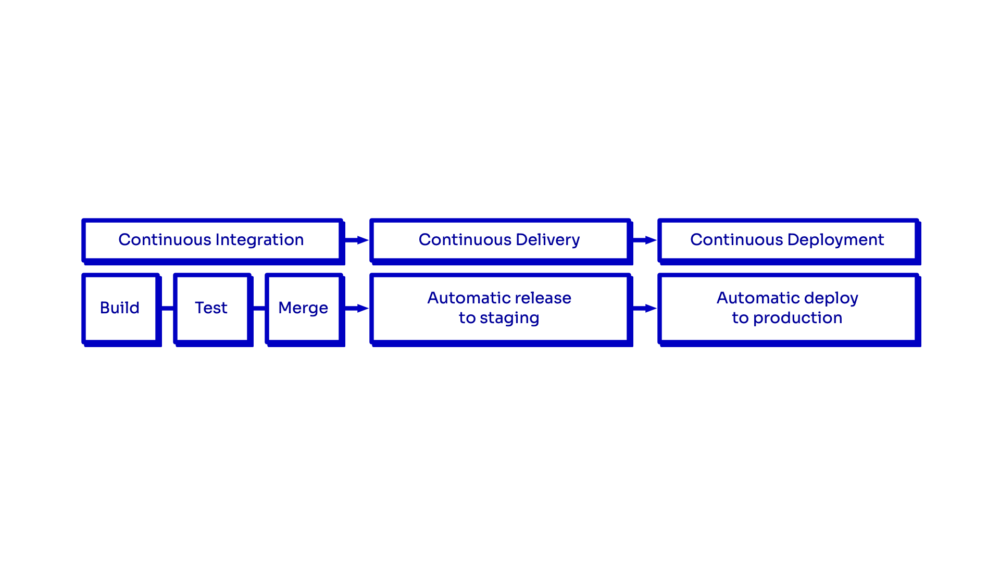

[api.]stadtpuls.com
/behind/the/curtain
Julia Zimmermann, Ingo Hinterding, Dennis Ostendorf, Lucas Vogel & Fabian Morón Zirfas
2021-10-20

Fabian Morón Zirfas
- Senior Creative Technologist
- @Ideation & Prototyping Lab
- @Technologiestiftung Berlin
- GitHub: @ff6347
Lucas Vogel
- UI/UX Designer & Frontend Developer
- @CityLAB Berlin
- @Technologiestiftung Berlin
- GitHub: @vogelino
T.O.C.
- Stadtpuls Tech Stack
- Konvention vor Konfiguration
- Dokumentation
- Qualitätssicherung
Online Präsentation
Stadtpuls Tech Stack


Konvention vor Konfiguration
Große Communities

Viele Resourcen

Open Source/Core

Backend as a Service Startup
Supabase is an open source Firebase alternative.

Dokumentation
JavaScript…
…Versus Typescript
Fastify JSON Schemas

JSON Schema
POST http://example.com/api/cats
{
"$id": "https://example.com/api/cats.schema.json",
"title": "cats",
"type": "object",
"additionalProperties": false,
"properties": {
"name": {
"type": "string",
"description": "The cat's name."
},
"mood": {
"description": "The mood the cat is in.",
"enum": ["grumpy", "happy", "purrrr!"]
}
},
"required": ["mood"]
}Request 201
POST /api/cats HTTP/1.1
Host: example.com
Content-Type: application/json
{"mood": "purrrr!"}Request 400
POST /api/cats HTTP/1.1
Host: example.com
Content-Type: application/json
{"mood": "purrrr!", "saz": "I hate Mondays!"}
Storybook

Qualitätssicherung
Testing
- Unit-testing
- Snapshot-testing
- Integration-testing
Storybook
Code Reviews
Github Actions
- CI (Continuous Integration)
- CD (Continuous Delivery)
- CD (Continuous Deployment)

Staging Environments
Q & A
Danke
für Ihre Aufmerksamkeit